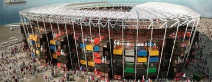

Ras Abu Aboud Stadium

Doté de 40 000 places, le Ras Abu Aboud Stadium est un exploit écologique
établi sur les rives du golfe Persique et surplombant Doha, située à
seulement quelques kilomètres. Fabriqué à partir de conteneurs et d’autres
matériaux réutilisés, ce stade sera démantelé après la Coupe du monde 2022
et ses pièces serviront à réaliser d’autres projets dans le pays. Bâti
dans un cadre exceptionnel au bord de la mer, cette arène sera une bouffée
d’air frais pour les supporters, qui pourront s’y rendre rapidement en
métro à partir du centre-ville de Doha, juste de l’autre côté de la baie.